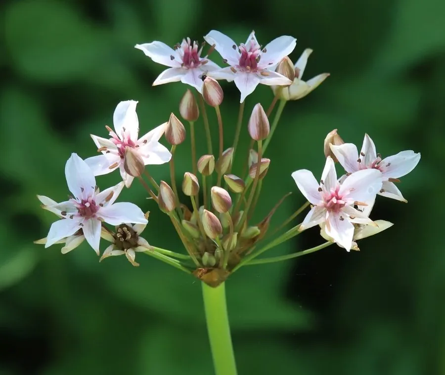

水生植物 · 植物界
花蔺 Butomus umbellatus

花蔺科花蔺属多年生水生草本，叶三棱状、花序伞形，花淡粉至白色，生于浅水与沼泽，是湿地中的优雅野花。
- 分类
- 门被子植物门纲木兰纲目泽泻目科花蔺科属花蔺属
- 栖息环境
- 池塘、沼泽与河岸的浅水带，喜阳光充足、浅水或湿润土壤
- 地理分布
- 欧洲、亚洲温带；中国北方与华东的湿地常见
- 保护级别
- IUCN 暂无评估；分布较广，栖息地受湿地开垦影响
物种志
花蔺为多年生水生草本，高 30–100 厘米，具粗壮根状茎。叶片基生，三棱状线形，长 30–80 厘米，直立或稍弯，横切面呈三角形。花茎圆柱形，顶生伞形花序，花淡粉红色至白色，直径约 2 厘米，花被片 6 枚，雄蕊 9 枚，花蕊紫红色；果实为蓇葖果，成熟时开裂。
本种分布于欧洲、亚洲温带地区，中国北方与华东的池塘、沼泽与河岸常见，喜阳光充足、浅水或湿润土壤。它叶形奇特、花序如伞，是湿地中的优雅野花，常成片生长于浅水边缘。花蔺的根状茎可食，含淀粉，历史上曾在饥荒时被采食；茎叶可用于编织。栽培时需保持 10–30 厘米浅水，并给予充足光照。
形态与习性
- 株高30–100 厘米，具粗壮根状茎
- 叶三棱状线形，横切面呈三角形
- 花期6–8 月，伞形花序、花淡粉色
- 光照强阳性，需充足直射光
- 水分生于 10–30 厘米浅水或湿生土壤
- 土壤富含腐殖质的塘泥
- 主要用途湿地造景、根茎食用与茎叶编织
趣味知识
- 花蔺的叶片横切面呈三角形，是识别它的重要特征。
- 它的伞形花序像一把撑开的小伞，花淡粉色、花蕊紫红。
- 花蔺的根状茎含淀粉，历史上曾在饥荒时被采食。
- 它原产欧亚温带，在中国北方的浅水湿地常成片生长。